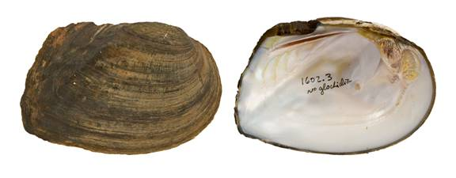

Plectomerus dombeyanus (Valenciennes, 1827)
Bankclimber

Plectomerus dombeyanus – Sulphur River [Sulphur River drainage], length 86.0 mm.
Identification
Shell structure: thick, moderately inflated, smaller individuals can be compressed.
Shell outline: rectangular to rhomboidal.
Posterior ridge: high, sharp, and ends at the base of the shell in a point.
Shell color: greenish-brown, brown, or black; dull but may be shiny in smaller individuals.
Rays: none reported.
Shell texture: plications and corrugations on posterior 75% of shell, umbo region may show corrugations, posterior slope often sculptured with plications or corrugations; disk sculpturing may be less prominent on larger individuals.
Umbo: low, broad, even to elevated slightly above the hinge line; umbo cavity wide, shallow.
Umbo sculpture: irregular, double-looped or nodulous ridges.
Pseudocardinal teeth: thick, erect, triangular, 2 divergent teeth in left valve, may separate dorsally, 1 tooth in the right valve.
Lateral teeth: thin, straight to slightly curved, 2 in left valve, 1 in right valve.
Interdentum: short to moderately long and narrow.
Other: not sexually dimorphic.
General range
East Texas to western Alabama and north to southeastern Missouri and southwestern Kentucky.
Habitat
Medium to large rivers, oxbows, lakes and reservoirs. In riverine habitat occurs in lentic habitats along the shore or in backwater pools or eddies with still to moderate currents in mud or sand or among cobble and boulders. In mainchannel habitats occurs in moderate to swift currents in sand, gravel or cobble substrates.
Legal listing status